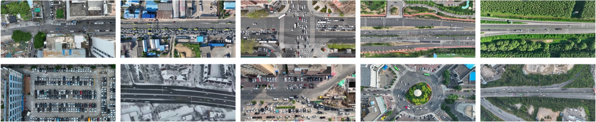

From Human Driving
to Human-Like Driving
We capture how humans actually drive — at scale, from the sky — to build the baselines that make automated driving safer, smoother, and more human.
We capture how humans actually drive — at scale, from the sky — to build the baselines that make automated driving safer, smoother, and more human.
One of the world's largest aerial naturalistic driving datasets, capturing real-world traffic interactions from a bird's-eye perspective.
Automated driving needs two reference lines — one from the edge, one from the everyday. Between them lies where intelligent vehicles should operate.
Derived from field testing and regulations (UNECE R157, ISO 34502). Captures extreme scenarios — the hard floor that must never be breached.
Derived from naturalistic driving data. Captures how millions of drivers actually behave in 99%+ of daily scenarios — the soft reference that defines comfort and efficiency.
Bird's-eye view trajectory data with comprehensive kinematic parameters, enabling scenario extraction aligned with ISO 34502.

A typical urban commute — our data covers every scenario from departure to arrival
Lowering the barrier for naturalistic driving research. Free for non-commercial academic use.

Highway and expressway congestion scenarios. Rich car-following and lane-change interactions under constrained traffic flow.
Learn More →
Trajectories of vehicles, pedestrians, and cyclists at signalized intersections with traffic light phase data.
Learn More →
Detection and tracking of pedestrians, cyclists, and e-bike riders in mixed urban traffic environments.
Learn More →One answer — naturalistic driving data — five directions of impact.
Replace guesswork with data-driven thresholds for ADAS/AD system design and parameter tuning.
P25–P75 percentile baselines from 10 million trajectories — not one expert's opinion. Scene-differentiated, statistically grounded.
Fill the quantitative gaps in current standards with representative naturalistic parameters (P5–P95).
Naturalistic data as "denominator" + accident data as "numerator" — computing real-world risk exposure rates.
Deploy human driving behavior models as continuous on-board reference systems for real-time performance assessment.
With the vision of "Scenario-driven Intelligent Transportation and Automated Driving Safety," DRIVEResearch aims to provide scenario data-related products and solutions for users in the fields of intelligent transportation and intelligent connected vehicles, thereby promoting overall traffic safety.
DRIVEResearch is located in the JLU-Smart Industrial Park, Changchun, China. The main R&D team originates from the AD Safety Joint Lab at Jilin University, and its primary achievements are derived from multiple scientific research projects, such as "Dataset Development and Application of Safety Critical Scenarios for Autonomous Vehicles" and "Application and Industrialization of Low-altitude Information Acquisition Technology Based on Aerial Vehicles."
Jilin University
AD Safety Joint Lab
ZHUOYU Technology
(formerly DJI Automotive)
fka / leveLXData
(Aachen, Germany)
Interested in our data or solutions? Let's talk.
9A-2, Digital Technology Incubation Base, Jingyue High-tech Zone, Changchun, China